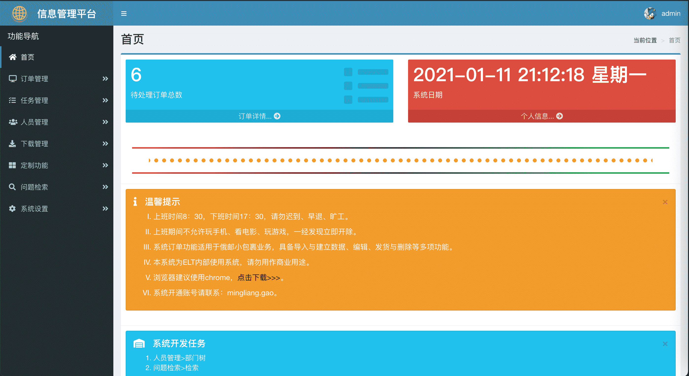

背景
项目基于Python+mysql+gunicorn+supervisor进行搭建的一个web脚手架，python的web框架使用的是flask。架子已经基本搭建起来，备具Restful API、验证session、页面模板功能、一键式安装包、启动等功能。
通过这个脚手架开发的一个信息管理综合小系统，用来做Demo，完美使用！！！。

环境说明
| id | name | Version |
|---|---|---|
| 1 | Os | MacOS10.15.6 |
| 2 | IDE | PyCharm |
| id | name | Version | Function |
|---|---|---|---|
| 1 | Python | 2.7 | 开发语言，基于python2 |
| 2 | flask | 1.1.2 | 使用的web框架 |
| 3 | MariaDB | 5.5.65 | 数据库 |
| 4 | gunicorn | 20.0.4 | web服务与进程 |
| 5 | supervisor | 3.4.0 | 项目启动、停止、重启等操作 |
项目主要运行于Linux系统上，本人开发使用的是MacOS，线上服务使用的是腾讯云服务器（Centos7.0）。
项目说明
- 地址：http://121.4.56.169:18888/
- 账号：admin
密码：0

现有功能：
- 订单管理
- 任务管理
- 人员管理
- 下载功能
- 定制功能
- 问题检索
- 系统设置
- Centos7.0系统服务器（建议Mac或者云服务器）
- mysql数据库安装与配置（略，建议baidu一下）
- 安装git命令，如果有进行下一步（检测：which git）
- git clone https://github.com/GIS90/base_webframe.git
- 更新web配置文件：etc/prod/config.py（线上）、etc/dev/config.py（测试），根据不同需求进行项目更改
- 安装项目运行的环境：python install_env.py，建立项目独立的运行环境，安装了virtualenv、python、gunicorn、packages等操作，了解具体详情请参考代码
- cd 项目根目录
- 项目根目录：source .venv/bin/activate：激活项目环境
- 启动项目：gunicorn -c etc/prod/gunicorn.conf（线上）、gunicorn -c etc/dev/gunicorn.conf（测试）或者手动启动（下面有介绍），关于dev/prod配置请参考上面介绍
- 【选做】：安装supervisor && 项目加入supervisor进行管理，项目包含了supervisord配置文件&&项目supervisor配置文件
配置说明
项目配置主要有2套，位于项目的根目录etc下：
- dev 测试环境
- prod 线上环境
每套配置文件夹下有3个配置文件，config与gunicorn进行绑定：
- config：项目的db、mail、log等配置，这里的log记录项目的log，关于项目相关的配置都可以在此文件进行配置
- gunicorn：项目启动时所需要的IP、port、log、进程数量等配置
- supervisor: 项目管理的配置信息
.yaml格式的配置文件是有deploy/config.py进行解析的，如果在config.yaml配置文件中添加配置信息，需要在此文件进行解析添加，建议添加配置默认值。
手动启动
- 项目根目录wsgi.py文件加入
- app.run(host=”0.0.0.0”, port=11111, debug=True)
执行sudo python wsgi.py，代码目前已写入，处于注释状态
注意：
- 通过手动启动的项目为dev开发环境配置，可在deploy/config.py中进行默认调整（mode = os.environ.get(‘mode’) or ‘dev’）
- 如果手动启动模式开启，在gunicorn进行启动，会error: [Errno 48] Address already in use.
- 启动项目一定要用virtualenv安装的python环境进行启动（source .venv/bin/activate）
其他
安装包
手动进行包安装：
1
pip install -r requirements.txt
此程序运行于python2，其中requirements.txt项目所需要的包，已固定版本。
supervisor
管理项目进程的启动、停止、重启等操作。
安装：1
pip install supervisor
配置：
- dev：etc/dev/supervisor_base_webframe.conf
- prod：etc/prod/supervisor_base_webframe.conf
把指定环境的supervisor_base_webframe.conf cp到/etc/supervisord.d/include/*下。
项目root根目录下有supervisord.conf文件，用来配置supervisord。管理gunicorn
负责web项目进程、服务。
安装：
1
pip install gunicorn
配置：
- dev：etc/dev/gunicorn.conf
- prod：etc/prod/gunicorn.conf
如需特别项目启动信息，可以加入gunicorn.conf或者更改命令行gunicorn启动方式加入参数即可。
sql
创建sql：
deploy>sql>table_create_sql.sql，直接执行即可。插入sql：
deploy>sql>print_insert_sql.py，具体需要哪些insert的数据，看代码，根据需要插入。其他
- base_webframe_start.bash、base_webframe_end.bash为手动方式进行项目启动与项目结束（已废弃）。
- deploy>utils>utils.py 为工具方法，任何python2项目都适合使用。